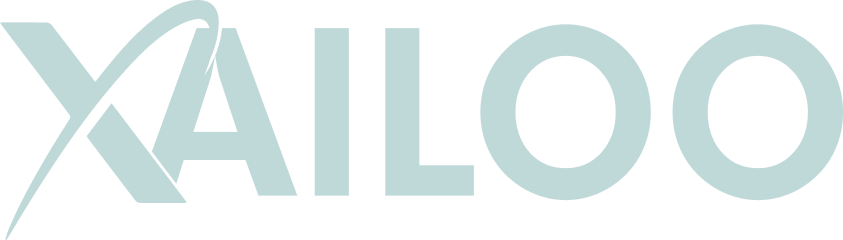

Web sitesi açılış animasyonu
Xailoo uygulamasının açılışındaki “Uyanış” animasyonunun web sürümü. İki sürüm var; birini açıp siteye nasıl görüneceğine bakın.

Xailoo uygulamasının açılışındaki “Uyanış” animasyonunun web sürümü. İki sürüm var; birini açıp siteye nasıl görüneceğine bakın.